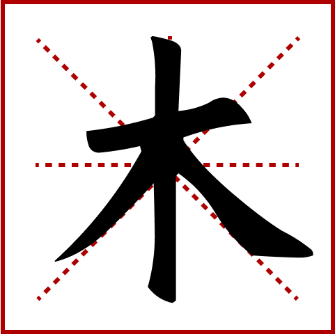

Nice! You created "wood" again!

WOOD
In Chinese, '木' stands for trees and wood, symbolizing nature and inspiring art and culture. But there's more to '木'. It's a building block for more complex characters, like '林' (forest, made of two '木') and '森' (dense forest, with three '木'). Through these words, we understand how Chinese characters combine elements to convey complex ideas.